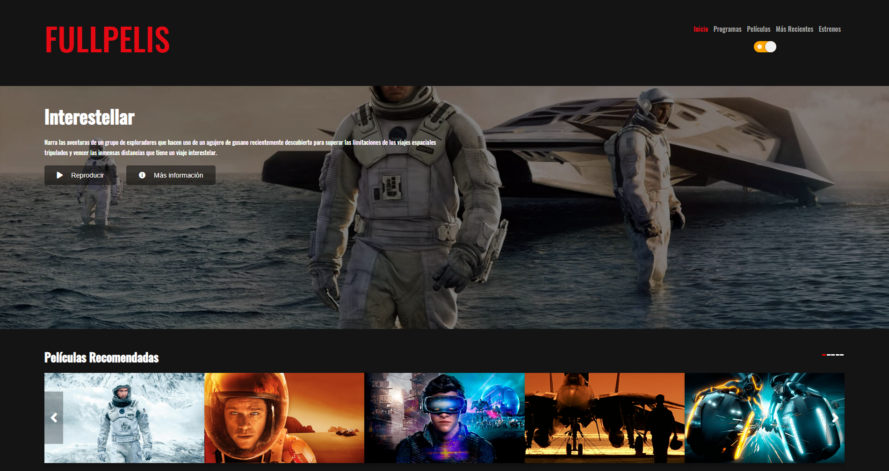

User: AdrianNC
Pass: https://cna-1.github.io/anc1/
First Web
10 Diciembre de 2020
Este es uno de mis primeros proyectos empezando a usar CSS.
Principalmente la Web se basa en una página de arte, donde se informa
sobre los mas conocido en el mundo artístico (cuadros, artístas...), también damos detalles de como es la compañia y en que se basa.
INNOVATIVE
ECCENTRIC ART
La compañia llamada es una empresa en desarrollo, la cual quiere llevar sus proyectos a ser conocidos mundialmente para poder dar
mas visibilidad al mundo del arte, que con el paso del tiempo se esta dejando abandonado.
Films web
26 Enero de 2015
Queriendo aprender más, sobre como desarrollar una página web a más nivel de css y html, empecé a desarrolar mis primeros pasos en
el mundo de JavaScript. Mi primer proyecto, quería que fuese sencillo pero a la mismas vez impactante, por eso decidí
empezar a hacer una página de peliculas inpirada en Netflix, que finalmente seria llamada FULLPELIS.

Intente basarme en los conceptos basicos y un pocos avanzados comunmente de una página de peliculas, incluso añadiendo
partes un poco más avanzadas como el modo noche, que no esta inplementado normalmente en este tipo de páginas.